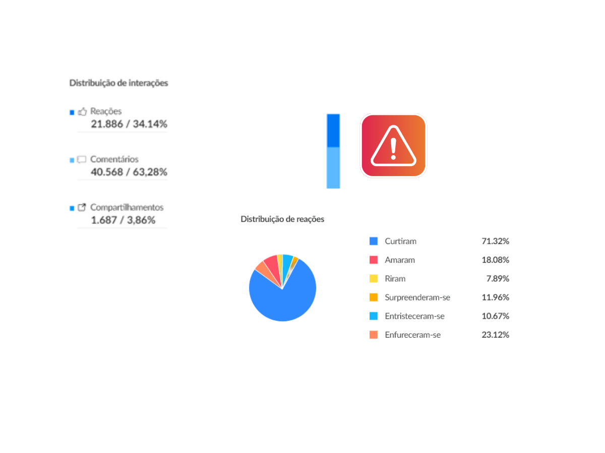

Descubra o que as
pessoas estão dizendo
sobre sua marca em
tempo real com IA
Obtenha análises detalhadas do seu perfil e dos seus concorrentes, descubra oportunidades e receba insights automáticos com a
plataforma de IA mais avançada do mercado.
Com Inteligência Artificial da Buzzmonitor, você tem insights
precisos em segundos, sem esforço manual.


Monitore, analise e tome
decisões mais rápidas com IA


A plataforma de IA mais avançada
para monitorar sua marca

IA para Social Listening
A IA monitora todo o universo da sua marca e transforma dados em insights!
Permite monitorar qualquer termo nas redes sociais, hashtags, marcas, concorrentes, eventos e stories — com dashboards ilimitados e em tempo real.
Agendar demonstração grátisIA para Geração de Insights
A IA faz o trabalho duro e a sua marca ganha produtividade e inteligência de dados!
O AI Insights gera análises resumidas dos seus relatórios de monitoramento, economizando tempo enquanto entrega os principais insights de forma rápida e simplificada.
Agendar demonstração grátis

Monitoramento de vídeos,
áudios e imagens
Monitoramento avançado para capturar cada detalhe sobre sua marca.
Menções em vídeos, stories, áudios e imagens são detectadas, transcritas e analisadas em tempo real, com alertas automáticos sobre menções negativas.
Agendar demonstração grátisGestão de Crises
em tempo real
Antecipe-se às ameaças de crises e mantenha o controle da narrativa!
A IA detecta picos de menções, cria alertas de termos sensíveis (Procon, racismo etc.) e ajuda a marca a agir antes que a crise exploda.
Agendar demonstração grátis
Experimente grátis
por 14 dias
Tenha várias soluções digitais em uma única plataforma, líder no uso de IA!
- ✓Monitoramento de redes sociais e análises por IA
- ✓Atendimento multicanal otimizado por IA
- ✓Relatórios de performance da marca e concorrentes
- ✓Otimização de processos e mais produtividade
- ✓E muito mais…

Ainda não está convencido?
Leia o feedback de quem já utiliza a Buzzmonitor

Pablo Ferrer, Head of Social Media na McCann
★★★★★
Conseguimos montar projetos de grande porte, do local ao global, com resultados muito valiosos e insights.


Leticia Saori Morita, Especialista em conteúdo na TotalPass
★★★★★
É muito completa, tanto para a área de análise, estratégia e reporting quanto no atendimento aos nossos clientes.

Sérgio Leal, Diretor de Marketing e Comunicação na McDonald's
★★★★★
A Buzzmonitor nos ajuda a gerenciar toda a informação que recebemos dos nossos consumidores e a responder com relevância.